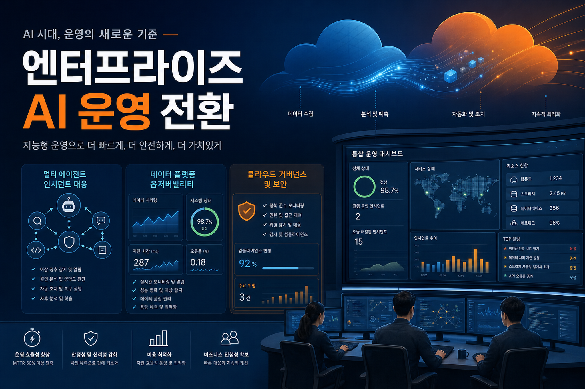
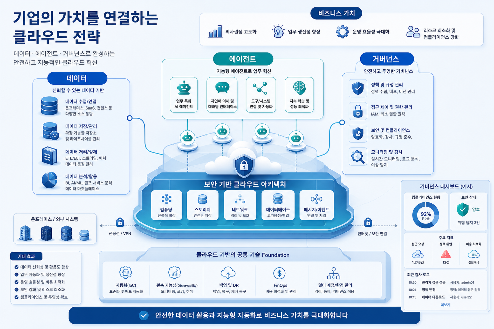
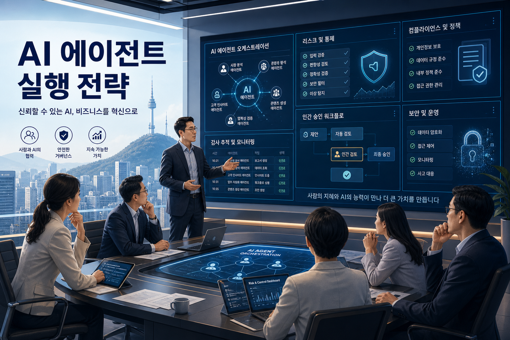

Machine Learning · Thu, 21 May 2026 22:22:28 +0000
Amazon Nova Act is now HIPAA eligible
Amazon Nova Act가 HIPAA eligible service가 되면서 헬스케어·생명과학 조직이 ePHI가 포함될 수 있는 브라우저 기반 반복 업무를 agentic AI로 자동화할 수 있는 길이 열렸다.
원문 보기 →오늘 RSS 신규 글은 없었습니다. 다만 최근 로컬 수집 문서를 보조 입력으로 삼아, Enterprise AI·Data·Cloud 관점에서 이번 주 AWS 기술 신호가 한국 기업의 운영 모델에 주는 의미를 정리했습니다.

최근 AWS 소스에서 반복되는 신호는 에이전트, 데이터 플랫폼, 거버넌스가 별도 트랙이 아니라 하나의 기업 실행 아키텍처로 합쳐진다는 점입니다.
현대오토에버 사례와 Bedrock AgentCore 계열 글들은 기업 AI가 챗봇을 넘어 장애 대응·BI·대시보드 자동화 등 운영 프로세스에 직접 들어가는 흐름을 보여준다.
OpenSearch, SageMaker AI, Bedrock, Nova 계열 신호는 데이터 검색·모델 서빙·에이전트 런타임이 분리된 프로젝트가 아니라 하나의 실행 플랫폼으로 묶여야 함을 시사한다.
AgentCore Policy, Evaluation, Observability와 HIPAA eligible 같은 소재는 기업 도입의 경쟁력이 모델 성능보다 감사·통제·평가 체계에 있음을 강조한다.

장애 대응, 채용, BI, 음성·대시보드 자동화처럼 AI는 특정 화면 기능이 아니라 업무 흐름의 중간 계층으로 들어간다. 따라서 API, 권한, 로그, human handoff가 제품 설계 초기부터 필요하다.
OpenSearch 기반 자연어 검색, SageMaker AI endpoint의 호환 API, Bedrock 기반 agent 구성은 기업 데이터와 모델 런타임의 접점을 표준화하는 방향으로 읽힌다.
HIPAA eligible, evaluation, observability 같은 키워드는 의료·금융·제조 기업에서 AI 도입의 승인을 좌우하는 핵심 증거가 된다.
| 관점 | AWS 신호 | 한국 기업 적용 포인트 | 확인 필요 |
|---|---|---|---|
| 운영 자동화 | Bedrock/AgentCore 기반 장애 대응·BI 자동화 | 장애·문의·리포트 업무부터 agent playbook을 만들고, SLA와 책임 경계를 정의 | 사내 ITSM/관제 도구 연동 권한 |
| 데이터 기반 AI | OpenSearch, SageMaker AI, vLLM, Nova 계열 | 검색/추천/실시간 음성 같은 고빈도 업무는 데이터 품질·latency·비용을 함께 측정 | 개인정보·원천 데이터 위치 |
| 거버넌스 | Policy, Evaluation, Observability, HIPAA eligibility | PoC 전에 평가 기준, 감사 로그, 실패 시 human review 절차를 문서화 | 산업별 규제 매핑 |

Agent가 tool을 호출할수록 IAM/업무권한/데이터 접근권한이 누적된다. 최소권한과 승인 흐름이 필요하다.
정확도·안전성·비용 기준이 없으면 자동화 성공 여부를 설명할 수 없다. 실험 단계부터 evaluation set을 관리해야 한다.
AI가 제안하고 사람이 승인하는지, AI가 실행하고 사람이 사후 감사하는지에 따라 책임 모델이 달라진다.
신규 수집 및 최근 24시간 내 로컬 문서가 없어, 가장 최근 로컬 AWS 소스(약 48시간 전)를 보조 입력으로 사용했습니다. 따라서 일부 최신성 판단은 확인 필요입니다.
Machine Learning · Thu, 21 May 2026 22:22:28 +0000
Amazon Nova Act가 HIPAA eligible service가 되면서 헬스케어·생명과학 조직이 ePHI가 포함될 수 있는 브라우저 기반 반복 업무를 agentic AI로 자동화할 수 있는 길이 열렸다.
원문 보기 →Korea Tech · Fri, 22 May 2026 02:08:59 +0000
현대오토에버와 AWS가 GenAI Sandbox를 구축하고 14개 팀, 150명이 참여한 해커톤을 통해 생성형 AI 실험·검증·프로덕션 전환의 기반을 만든 사례다. 핵심은 보안·비용·권한·네트워크·개발 패키지를 사전에 표준화해 개발자가 행정/인프라 리드타임 없이 업무 혁신 아이디어를 구현하도록 만든 점이다.
원문 보기 →Korea Tech · Fri, 22 May 2026 02:46:02 +0000
현대오토에버 차량제어서비스개발팀의 ErrorWatcher는 LangGraph 기반 다중 에이전트로 장애 감지, 근본 원인 분석, 해결책 제시, 보고서 생성을 자동화해 장애 대응 시간을 수 시간에서 5분 수준으로 단축한 사례다.
원문 보기 →Korea Tech · Fri, 22 May 2026 02:50:42 +0000
현대오토에버 데이터플랫폼기술팀은 Hadoop 기반 빅데이터 클러스터 운영에서 LangGraph, Amazon OpenSearch Service, Amazon Bedrock을 결합해 장애 대응 자동화 에이전트를 설계했다. 병렬 RCA, 자체 반증, Checkpoint, read-only 진단, Human-in-the-Loop 승인으로 운영 자동화와 안전성을 동시에 추구한다.
원문 보기 →| 발행일 | 출처 | 제목 | 요약 |
|---|---|---|---|
| Thu, 21 May 2026 22:22:28 +0000 | Machine Learning | Amazon Nova Act is now HIPAA eligible | Amazon Nova Act가 HIPAA eligible service가 되면서 헬스케어·생명과학 조직이 ePHI가 포함될 수 있는 브라우저 기반 반복 업무를 agentic AI로 자동화할 수 있는 길이 열렸다. |
| Fri, 22 May 2026 02:08:59 +0000 | Korea Tech | 현대오토에버의 GenAI Sandbox 활용 생산성 향상 Hackathon: 혁신과 협업의 성공 사례 | 현대오토에버와 AWS가 GenAI Sandbox를 구축하고 14개 팀, 150명이 참여한 해커톤을 통해 생성형 AI 실험·검증·프로덕션 전환의 기반을 만든 사례다. 핵심은 보안·비용·권한·네트워크·개발 패키지를 사전에 표준화해 개발자가 행정/인프라 리드타임 없이 업무 혁신 아이디어를 구현하도록 만든 점이다. |
| Fri, 22 May 2026 02:46:02 +0000 | Korea Tech | 현대오토에버의 Amazon Bedrock으로 구축한 다중 AI 에이전트: 장애 대응 시간 5분으로 단축하기 | 현대오토에버 차량제어서비스개발팀의 ErrorWatcher는 LangGraph 기반 다중 에이전트로 장애 감지, 근본 원인 분석, 해결책 제시, 보고서 생성을 자동화해 장애 대응 시간을 수 시간에서 5분 수준으로 단축한 사례다. |
| Fri, 22 May 2026 02:50:42 +0000 | Korea Tech | 현대오토에버의 Amazon Bedrock으로 구축한 빅데이터 클러스터 장애 대응 자동화 에이전트 구축기 | 현대오토에버 데이터플랫폼기술팀은 Hadoop 기반 빅데이터 클러스터 운영에서 LangGraph, Amazon OpenSearch Service, Amazon Bedrock을 결합해 장애 대응 자동화 에이전트를 설계했다. 병렬 RCA, 자체 반증, Checkpoint, read-only 진단, Human-in-the-Loop 승인으로 운영 자동화와 안전성을 동시에 추구한다. |